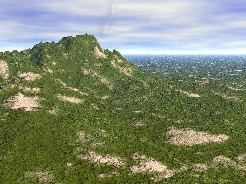

First Contact
As you start off the game, make sure that none of the players read any material except for the rules. It helps if all players have read the rules and are familiar with them before you start playing. A good way to become familiar with the game system is to do a couple of “dummy fights” before you start the real game. Just create a couple of characters, imagine them being in an arena, about to start a duel. Let two players play one of the characters each. You as the Game Master starts the game by asking each player what he or she will do the first combat round. Then the duel is on. Play till one of the characters are down (zero Body Points or lower). When you and the players are familiar with the rules, you are ready for your first adventure.
As this is the first adventure of the Amar RPG, you might want the players to start off with some of the pre-created characters available on our web site. If you would rather let the players create their own characters, just follow the rules on creating a character in the beginning of the rules. Use the point distribution for a beginner character (or an adventurer if you want the characters to start off with a slight edge). Remember that the PCs start off with a Magical Aptitude of 1, and that the second point costs 3 distribution points.

They are thrown into their first adventure by the sheer fact that they are washed up on a beach and don’t remember anything of their past. They do know that they are friends. They know what they are good at, i.e. their attributes and skills and any magic spells. And they have some possessions still on them. Remember, they have just managed to escape their sinking ship (don’t tell the PCs that!), so all heavy equipment are at the bottom of the ocean, out by the stormy cliffs. The lighter equipment such as their clothes, any light weapons up and including a short sword, and some money are still with them. Due to their recent struggle in the water, they do not have any boots on. Nor do they have any armor.
The weather is slightly overcast, the clouds move rapidly above. The temperature is about 20°C (68°F), it is spring. The wind makes it a little chilly even so, and the characters are dripping wet. Standing on the beach, they can see a cart road parallell to the beach, going left and right. On the other side of the road, there is a slope up to a hill, about 80 meters high.
The characters are probably able to judge the approximate direction of north, it is somewhere in the direction of the hill.
Make sure to elaborate this scene for the players.
If the PCs choose to go across the road and up on the hill, they will see plains as far as the eye can see. Except for something lookig like a farm a couple of kilometers north east along the road.
The Mugging
No matter which way the PCs choose to go, they will shortly (after walking about a kilometer) encounter a party of 12 bandits. This is the Cholan gang. They roam the southern coastline of the kingdom, mugging any suitable targets. They are not too brave, so they prefer to mug unarmed travellers or families or decadent rich people. When the muggers encounter the PCs, they think they are unlucky fishermen that managed to escape a sinking boat.
The Cholan gang is a party of 12 rouges. Their leader, Cholan (38) used to be a sailor and he has a drinking problem. He is quite strong and a bully. He is armed with a battle axe and wears cuirbolli armour. His gang is rough and tough even though they are not too brave. They use swords or axes and wear hard leather or cuirbolli as armor. They ride horses and use crossbows as hunting weapons and for mugging.
The muggers are mounted on horses, and there are but bare plains and nowhere to hide. No matter what the PCs do, they will be caught by the gang. And theywill be mugged.
As the muggers approach the PCs, they point their crossbows at them (10 crossbows – any unwise move will be very unwise, indeed.). The leader, Cholan himself, orders the PCs to stop. He will be very blunt and will not engage in any discussions. He will order them to take off their clothes, except for their underwear, and then walk 10 meters away from it. Three muggers will then climb down from their horses, walk over to the equipment and take everything except for the clothes. Any action taken to hide items or throw items somewhere will be met with outright antagonism.
A mugger may well shoot a PC in the leg as a warning to the other PCs. If a PC stands still as the mugger fires, the mugger will have a DR of 5 - the size of the character + 3 (for aiming at a limb rather than the body). This works out to be 8 - the character’s size. The mugger would then have to throw a dice and add his offensive value with a crossbow. If it matches the DR or higher, it is a hit (in a random hit location). If it is 3 or more above the DR, the leg is hit. Remember the double damage if the hit is 5 more than needed. Triple if 10 more, etc. So, being a rebel against the muggers will almost certainly make a PC limp or worse. If the PC gets some kind of forewarning (such as the mugger threatening to shoot before he does – which he probably will do), the PC may try to avoid being hit. Then you add 5 to the DR (target moving randomly) and add also for target dodging (+2 + one per full three in the PC’s Dodge skill). This will make it a little harder for the mugger to hit. It is still not the doctor’s recommendation though.
The PCs are left in the wind with only their clothes. Their best choice would obviously be the farm to the north east. Hopefully, the residents are friendly. The PCs are hungry, wet, cold and defeated. A rest would not hurt at all.
Gailan’s Farm
The farm belongs to Mr. Gailan and his family. Virac Gailan (302) is a good farmer and sheep herder. He has some 100 sheep grassing on the plains some 10 to 20 kilometers north of the farm. He also grows various vegetables. His family is self sufficient and makes a healthy living out of it. They used to be quite rich before a mob burned his house down seven years ago. This was not the Cholan gang. The farm is well kept.
Virac is a strong man. About 180 cm high and weighing some 90 kilos, he has the build of a fighter. He is also fairly skilled with the sword given to him by his grandfather. When needed, he will wear the armor that his father used to wear in combat. Sometimes Virac will wear his armor and wield his sword when threatened by bandits or rouges.
Local gangs like the Cholan’s leave the Gailan family and their neighbours alone. They tried to rob a couple of the farms about two years ago. They were met by a considerable force following them after the robbery. The party of farmers tracked down the robbers and forced the loot back into their hands. From that day, the robbers have left the farmers in this area alone.
Virac’s wife Fiona (313) is a skilled trapper and hunter. She takes care of the household and supplies small game to their diet. She is a pretty lady with long, black hair.
Fiona and Virac have two daughters: Vaïna (332) and Shienna (337). Vaïna is a slim, beautiful woman. She is a weaver by trade and makes the clothes for the family. She also sells clothes to the local farmers or any passing travellers. Shienna is a dreamer. She likes to be an artist, but this is not productive for the family’s income. She dreams of becomming an Ielina priestess, she dreams of the princess, which she knows is an Ielina worshipper. She dreams of the prince on a white horse coming to rescue her from her boring life. She is beautiful as her sister but a lot less realistic. She is the person the others have to push to get the jobs on the farm done. They constantly need to snap her out of her dreams and back to the farm.
The Gailan family love visitors, as long as they are well-intentioned. When the PCs approach the farm, Fiona will be ready as always, picking up her bow and arrows and waiting by the window. When they are about 30 meters from the main building, she will shout, “Friend or foe? Reveal your names.” Depending on the PCs’ answer, she may also say, “What is your business here?” When she is fairly certain the PCs are friendly, she will ask them to have a rest in the garden and she will get them something to eat. She will not let the PCs into the house until Virac comes home from checking up on the sheep.
He comes home an hour later. In the meantime, Vaïna will go out with some bread and salt meat for the PCs. Fiona will be watching from the window, bow and arrow ready.
…to be continued.